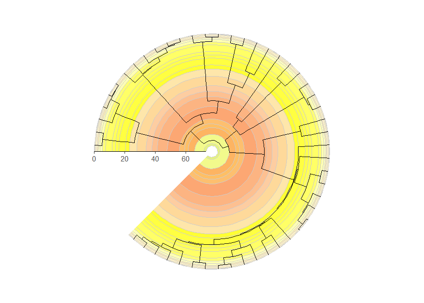
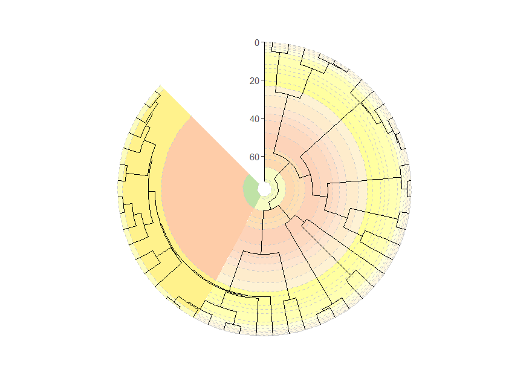

coord_geo() is also designed to work smoothly with
phylogenies that are plotted with the ggtree package.
First let’s load some important packages.
# Load deeptime
library(deeptime)
# Load other packages
library(ggplot2)
library(dplyr)
# Load ggtree
library(ggtree)
# Load phytools for some example data
library(phytools)
data(mammal.tree)
# Load paleotree for some example fossil data
library(paleotree)
data(RaiaCopesRule)Timescales and phylogenies
Now, let’s plot some phylogenies with timescales! Note that by
default the time axis increases toward the tips for trees plotted with
ggtree(), so you must use the revts() function
from ggtree
to change the x-axis values to increasing negative values. Note that
once you’ve done this, you will need to set neg = TRUE in
coord_geo(). Furthermore, any time axis limits that you set
will need to be negative. Here we also use the
scale_x_continuous() function to relabel the negative
x-axis values with positive labels.
p <- ggtree(mammal.tree) +
coord_geo(xlim = c(-75, 0), ylim = c(-2, Ntip(mammal.tree)), neg = TRUE, abbrv = FALSE) +
scale_x_continuous(breaks = seq(-80, 0, 20), labels = abs(seq(-80, 0, 20))) +
theme_tree2()
revts(p)
Phylogenies with only fossil taxa
Many phylogenies only have fossil taxa in them (i.e.,
non-ultrametric). These can be handled by coord_geo() by
using position_nudge() function. In most cases, you will
want to nudge the time axis values (in this case, the x-axis) by the
root.time of your phylogeny. Also, note that we have
modified plot.margin here to accommodate the stacked
timescale.
ggtree(ceratopsianTreeRaia, position = position_nudge(x = -ceratopsianTreeRaia$root.time)) +
coord_geo(
xlim = c(-163.5, -66), ylim = c(-2, Ntip(ceratopsianTreeRaia)),
pos = list("bottom", "bottom"), skip = c("Paleocene", "Middle Jurassic"),
dat = list("epochs", "periods"), abbrv = FALSE,
size = list(4, 5), neg = TRUE, center_end_labels = TRUE
) +
scale_x_continuous(breaks = -rev(epochs$max_age), labels = rev(epochs$max_age)) +
theme_tree2() +
theme(plot.margin = margin(7, 11, 7, 11))
Circular phylogenies
Phylogenies can be plotted in a circular layout with a timescale
background using the coord_geo_radial() function. It works
just like coord_geo() and has many of the same arguments.
Note that coord_geo_radial() only works with ggplot2
version 3.5.0 and higher. For other versions of ggplot2, you can use
coord_geo_polar().
revts(ggtree(mammal.tree)) +
coord_geo_radial(dat = "stages") +
scale_x_continuous(breaks = seq(-60, 0, 20), labels = abs(seq(-60, 0, 20))) +
scale_y_continuous(guide = NULL) +
theme_classic()
Circular phylogenies with “stacked” timescales
Timescales can even be “stacked” like with coord_geo(),
although the stacking occurs in a circular fashion. In this case, we use
scale_y_continuous() to add a small expansion to the y-axis
(which is now the theta axis) so the numbers don’t overlap with the
phylogeny. We also use the prop, start,
end, and direction arguments to specify how
the different timescales are oriented and split within the polar
space.
revts(ggtree(mammal.tree)) +
coord_geo_radial(
dat = list("stages", "periods"), alpha = .5, lty = "dashed",
prop = list(0.66, .34), start = 2 * pi, end = 1.75 * pi, direction = 1,
) +
scale_y_continuous(guide = NULL, expand = expansion(mult = c(0.02, 0.02))) +
scale_x_continuous(breaks = seq(-60, 0, 20), labels = abs(seq(-60, 0, 20))) +
theme_classic()
Disclaimer
Note that coord_geo_radial() has been tested with the
plotting of ultrametric and non-ultrametric phylogenies with
ggtree::ggtree(), but it may have unexpected behavior when
combined with other functions from ggtree.
Furthermore, coord_geo_radial() may be useful (albeit
perhaps abstract) for plotting other types of data, but this has not
been investigated.